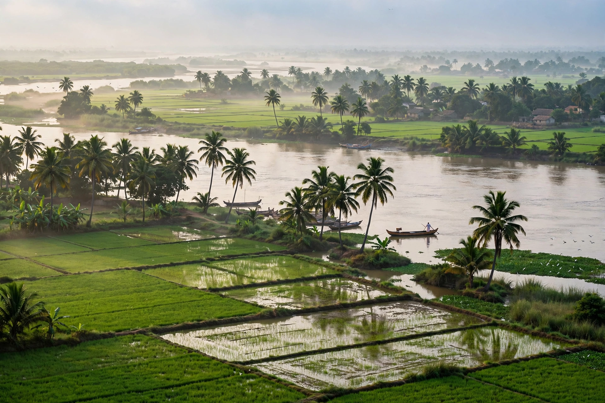

From Wikipedia, the free encyclopedia
| Andhra Pradesh | |
|---|---|
 | |
| Country | India |
| Capital | Amaravati (de facto seat of government) |
| Largest city | Visakhapatnam |
| Area | 162,970 km² (7th largest state) |
| Population | c. 53 million |
| Official language | Telugu |
Andhra Pradesh is a state in the southern coastal region of India. It is the seventh-largest state by area and tenth-most populous. It has a coastline of about 974 kilometres along the Bay of Bengal, the second longest among Indian states. The state was formed on 1 November 1956 under the States Reorganisation Act, and was bifurcated in 2014, when Telangana was carved out as a separate state.
The state is drained by two great rivers, the Godavari and the Krishna, whose deltas support intensive rice cultivation — Andhra Pradesh is often called the "Rice Bowl of India". The terrain ranges from coastal plains to the hill country of the Eastern Ghats. Major cities include Visakhapatnam (a major port and steel centre), Vijayawada, Guntur, Nellore, Tirupati, and Kurnool.
The region was ruled in antiquity by the Satavahanas, and later by the Eastern Chalukyas, the Kakatiyas (from Warangal), and the Vijayanagara Empire. It came under the Nizam of Hyderabad and British rule before independence. The temple town of Tirupati, with the Sri Venkateswara Temple, is one of the most visited pilgrimage sites in the world.
Agriculture, mining, pharmaceuticals, and information technology drive the economy; Visakhapatnam hosts a major port and naval base. Telugu cinema ("Tollywood") is centred in Hyderabad, a city shared historically with Telangana. The classical dance form Kuchipudi originates from a village of the same name in the state.
Categories: Andhra Pradesh | States of India